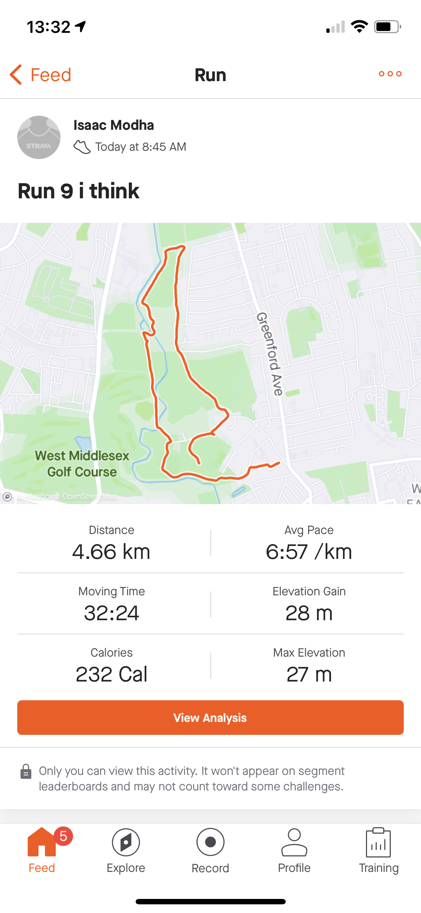
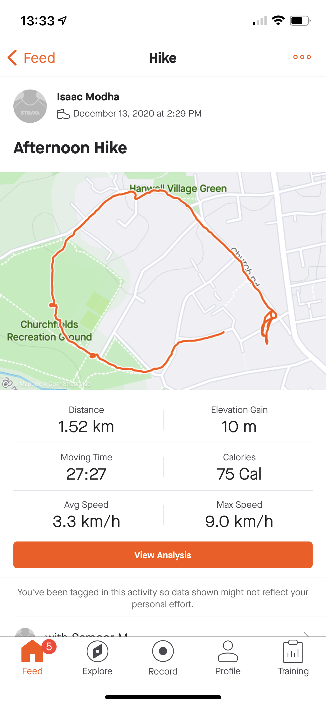
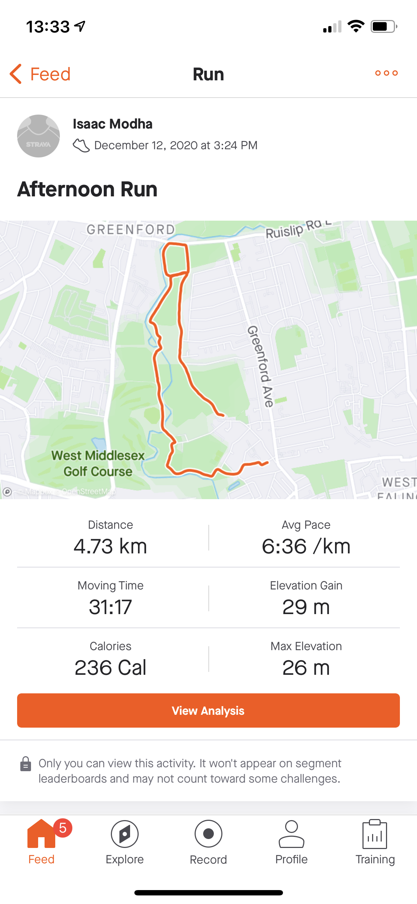
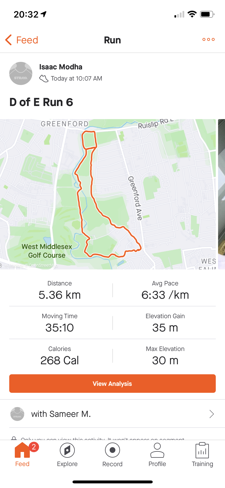
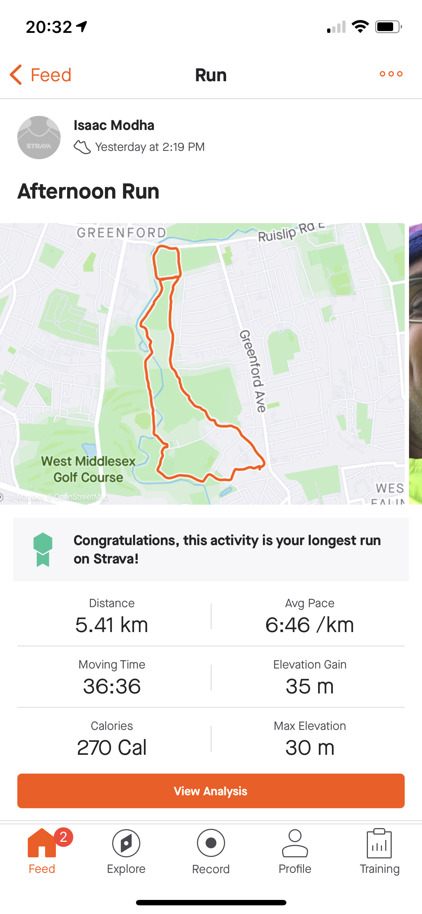
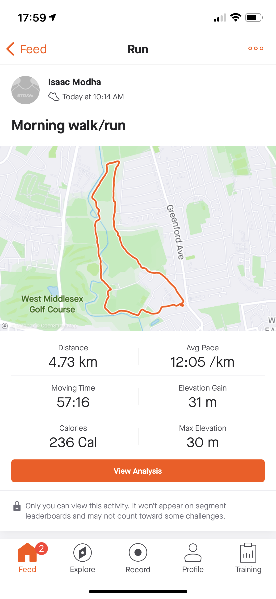
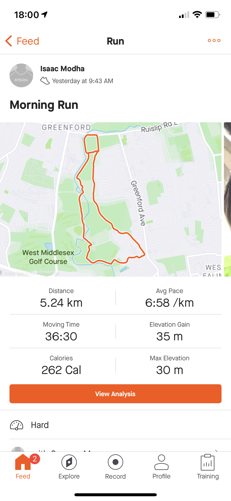
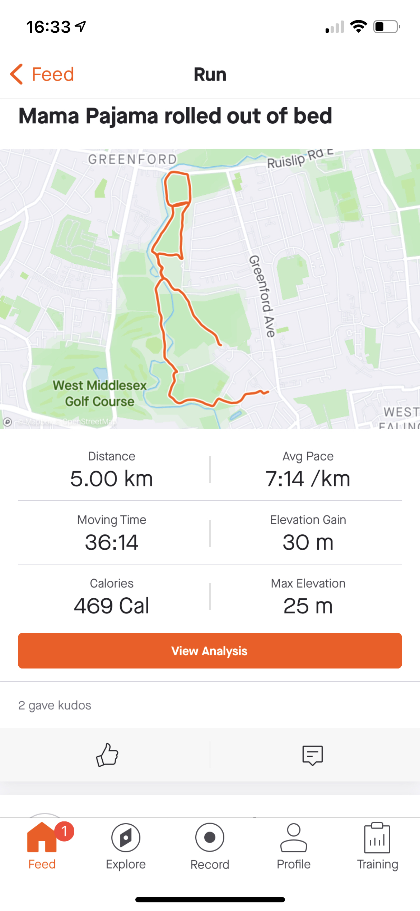

For my Physical task I am going to run for 30 mins twice a week and see if I can improve my times. My goal is to run 5k in under 26 minutes.
went for a muddy run, got cut slightly short

I went for a small run with my puppy

I went for a pretty good run with my mum

Today I went for a 5k run, I learnt from last time and improved quite a bit
Today I went for a 5k run, I had some chest pain due to food consumption
Today I went for a 5k run/walk I had a injury and didn't run well.
Today I went for a 5k run. I had to stop and start less than before.
Today I went for a 5k run. I had to stop and start a few times.
I have three objectives for my Skill.
Getting harder but more interesting. Frustrations are (a) motivation and (b) slow updates of Github Pages after I make a change and (c) the fiddliness of HTML
So far the site has been a somewhat challenging experience (mainly to begin with) and I am now at a stage where I can confidently make and maintain a basic website. Due to the lack of spell check, spelling has also been a issue.
Looking forward I would I would like to find away to automate the uploading of runs to the website from strava so I can cut back on time it takes to maintain
I would also like to find away of editing the raw text that is a bit more natural
Today I continued using HTML code for a website. My objectives for today are:
Today I began learning to code using HTML. I understand it better now.
I will be collecting litter in local parks. This is a 3 month volunteering segment for me and will begin in February once I have finished the Skill phase. (Although I will need to keep going with the Skill to keep this page updated with the Volunteering evidence.)